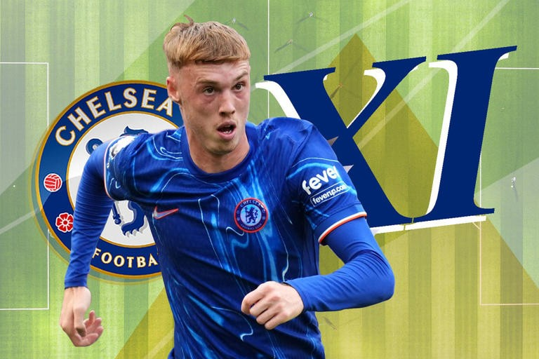

Chelsea XI vs Aston Villa: Confirmed team news, predicted lineup and injury latest for Premier League game
video source:Rdc productions
story by:Sharon Odanga
Chelsea are hoping to welcome Pedro Neto and Malo Gusto back into their side for this weekend’s Premier League meeting with Aston Villa.
Both players missed last weekend’s 2-1 victory away at Leicester, Gusto through illness and Neto with a knock picked up playing for Portugal during the international break.

Neither player was part of the travelling squad for Thursday night’s Conference League victory over Heidenheim, but ahead of that game manager Enzo Maresca issued a positive injury update.
“Both have trained with us,” the Italian said on Wednesday.
“We don't take a risk for tomorrow but both I think can be available for Sunday's game."
Gusto’s availability will be particularly important, given the Blues are expected to remain without captain Reece James.
James suffered a fresh hamstring injury in training during the international break and there have been reports this week that he will not play again this year, though the club are being cautious over a timeline.
Meanwhile, the likes of Cole Palmer, Nicolas Jackson and Moises Caicedo are among those who were also spared the midweek trip to Germany and will come straight back into the XI.
Romeo Lavia could return in place of Enzo Fernandez, despite the Argentine registering a goal and an assist at the King Power Stadium last weekend.
Predicted Chelsea XI (4-2-3-1): Sanchez; Gusto, Fofana, Colwill, Cucurella; Caicedo, Lavia; Madueke, Palmer, Neto; Jackson
Injured: James
Time and date: 1:30pm GMT on Sunday December 1, 2024
Venue: Stamford Bridge.
LEAVE A COMMENT